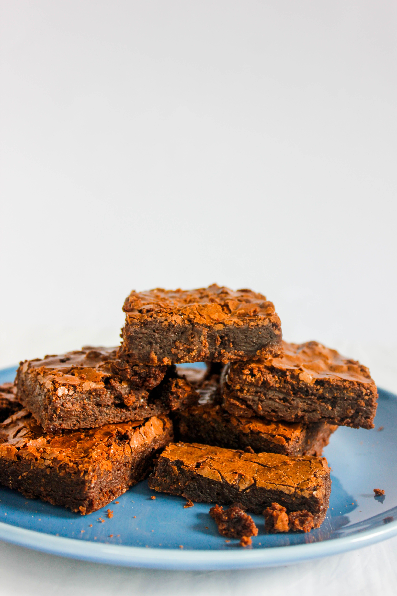

Home
Brownies

Description
These classic homemade brownies are rich, fudgy, and easy to make. Made with cocoa
powder, butter, sugar, and chocolate chips, they have a soft, chewy center and a slightly
crisp top. They're perfect for a simple dessert or afternoon treat.
Ingredients
- 1/2 cup butter, melted
- 1 cup sugar
- 2 large eggs
- 1 tsp vanilla extract
- 1/2 cup all-purpose flour
- 1/3 cup unsweetened cocoa powder
- 1/4 tsp salt
- 1/2 cup chocolate chips
Steps
- Preheat the oven to 350°F (175°C).
- Grease an 8inch square baking pan or line it with parchment paper
- in a large bowl, whisk together the melted butter and sugar.
- Add the eggs and vanilla extract and mix until smooth.
- In a separate bowl, combine the flour, cocoa powder, and salt.
-
Gradually add the dry ingredients to the wet ingredients and stir until
just combined.
- Fold in the chocolate chips.
- Pour the batter into the prepared baking pan and spread it evenly.
-
Bake for 20-25 minutes, or until a toothpick inserted into
the center comesout with few moist crumbs.
- Let the brownies cool before cutting them into squares and serving.